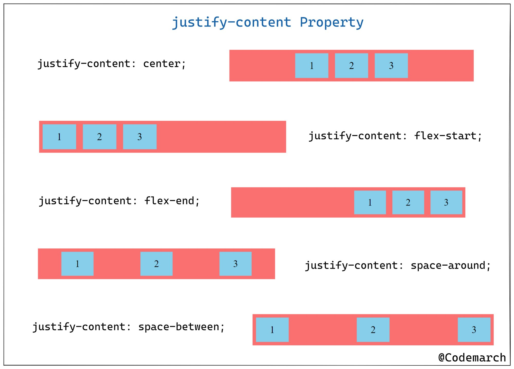

Flex-Properties
1) flex-direction
flex-direction: column;
flex-direction: column-reverse;
flex-direction: row;
flex-direction: row-reverse;
1
2
3
4
5
6
7
8
9
10
11
12
2) flex-wrap
flex-wrap: wrap;
flex-wrap: nowrap;
flex-wrap: wrap-reverse;
flex-flow: row wrap;
3) flex-flow
The flex-flow property is a shorthand property for:
flex-flow: row-reverse wrap;
flex-direction
flex-wrap
4) justify-content (left to right)
justify-content: center;
justify-content: flex-start;
justify-content: flex-end;
justify-content: space-around;
justify-content: space-between;

5) align-items (top to bottom)
align-items: center;
align-items: flex-start;
align-items: flex-end;
align-items: stretch;
align-items: baseline;
lign-content: space-between;
align-content: space-around;
6) align-content
lign-content: space-between;
align-content: space-around;
align-content: center;
align-content: flex-start;
align-content: flex-end;
align-content: stretch;
CSS display Property
display: none;
display: inline;
display: block;
display: inline-block;